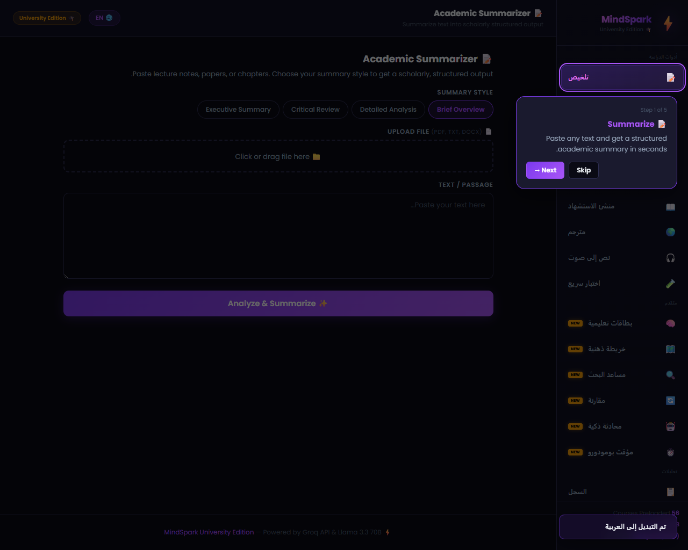
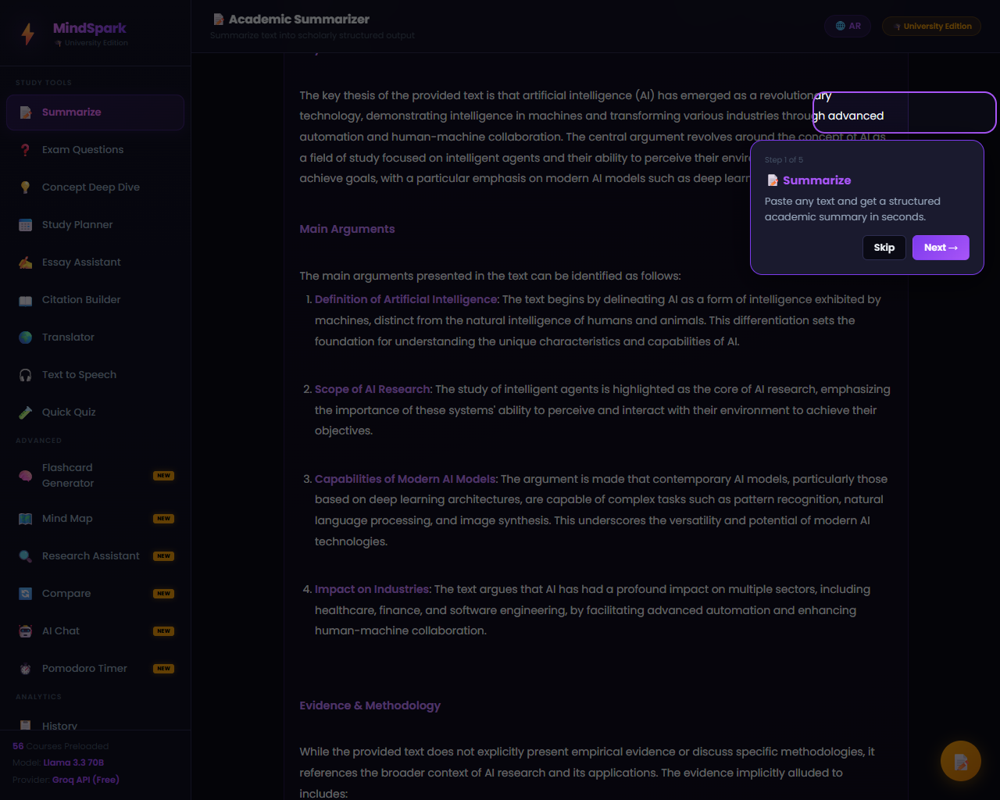
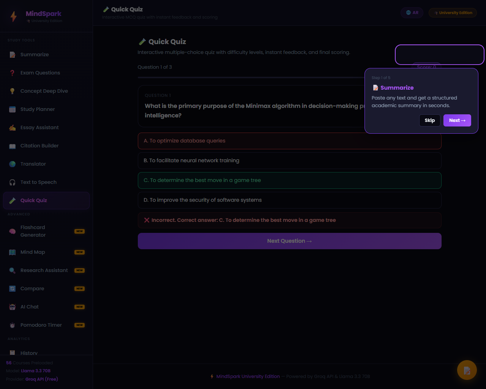
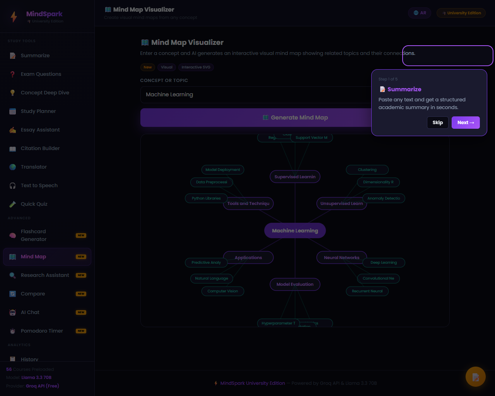
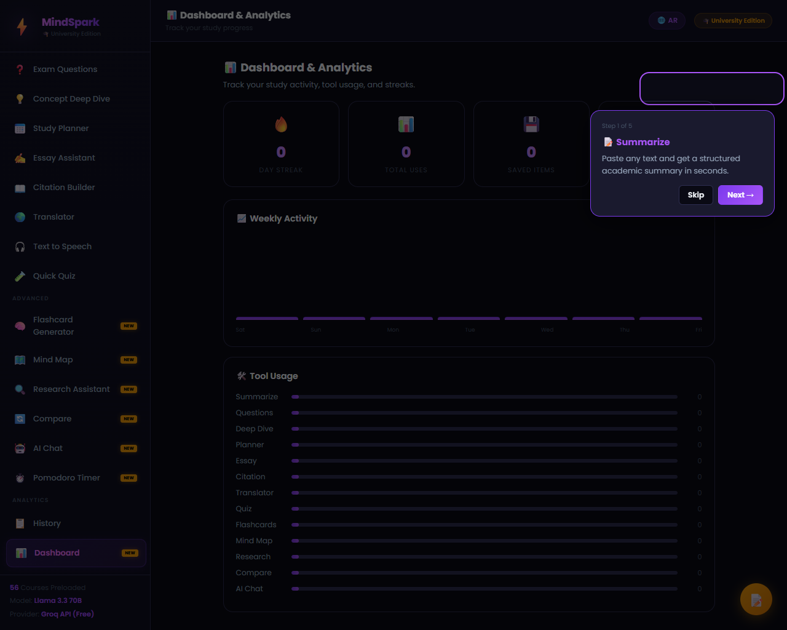

منصة مساعد الدراسة الأكاديمي الشامل المدعوم بالذكاء الاصطناعي
اسم المتدربعمر سعيد محمد كامل
كود المتدربAI8 - G3 - 0543
البرنامج التدريبيسفراء الذكاء الاصطناعي
الدفعة / المستوىالدفعة 8 / المستوى الأول
تقديم عام عن المشروع
تعد منصة MindSpark — University Edition نظاماً أكاديمياً متكاملاً صُمم خصيصاً لمساعدة طلاب الجامعات في تنظيم وتبسيط دراستهم وتحسين إنتاجيتهم العلمية. تعتمد المنصة على نموذج الذكاء الاصطناعي الفائق Llama 3.3 70B Versatile المقدم بشكل مجاني فائق السرعة عبر سحابة Groq API.
تتميز المنصة بكونها تطبيق ويب وحيد الصفحة (Single Page Application) يعمل بالكامل من جانب العميل (Client-Side) بدون الحاجة إلى خوادم وسيطة أو قواعد بيانات معقدة، مما يضمن أقصى درجات الحماية لبيانات الطلاب ويوفر سرعة استجابة مذهلة لا تتجاوز بضع أجزاء من الثانية.
البنية التقنية والتقنيات المستخدمة
Groq API CloudLlama 3.3 70BHTML5 & Vanilla JSCSS3 HSL VariablesPDF.js Text ExtractorWeb Speech API (TTS)LocalStorage Persistence
المكون التقني
الوظيفة والدور في المنصة
Groq Cloud API
تأمين الاتصال الفوري بنموذج الذكاء الاصطناعي Llama 3.3 70B وتمرير المطالبات الأكاديمية بدقة.
PDF.js & DOCX Parser
استخلاص النصوص وتفريغ المحاضرات مباشرة من ملفات الطلاب الجامعية (PDF, TXT, DOCX) محلياً بالكامل.
Web Speech API
تحويل النصوص الأكاديمية إلى كلام منطوق بلهجات متعددة اعتماداً على محرك المتصفح الداخلي مجاناً.
LocalStorage
تخزين وحفظ تاريخ الاستعلامات والملاحظات السريعة العائمة وإحصائيات لوحة التحكم وتفضيلات اللغة محلياً.
Responsive Dark Theme
تصميم عصري جذاب يتميز بالوضوح البصري المريح للعين أثناء جلسات الدراسة الطويلة مع دعم كامل للاتجاهين (LTR & RTL).
أدوات المنصة الأكاديمية (17 أداة دراسية)
تم تزويد المنصة بـ 17 أداة مبتكرة مقسمة على 4 أقسام رئيسية لتغطية كافة جوانب الحياة الأكاديمية للطلاب:
1. أدوات الدراسة الأكاديمية (Study Tools):
الملخص الأكاديمي (Academic Summarizer): تلخيص المحاضرات والكتب العلمية بأربعة أساليب أكاديمية مختلفة (موجز، تفصيلي، نقد علمي، ملخص تنفيذي).
منشئ أسئلة الامتحانات (Exam Question Generator): بناء أسئلة تحاكي الامتحانات الحقيقية (اختيار من متعدد، مقالي، قصير، صواب وخطأ، دراسة حالة) بـ 4 مستويات صعوبة مختلفة.
الشرح المعمق للمفاهيم (Concept Deep Dive): تحليل أكاديمي للمصطلحات يشمل التعريف الإجرائي والمنظور التاريخي وأشهر العلماء والعلل الشائعة.
مخطط الدراسة الذكي (Smart Study Planner): وضع جداول دراسية مخصصة زمنياً تعتمد على موعد الامتحان وساعات الدراسة اليومية وطرق التعلم المختلفة.
مساعد المقالات الجامعية (Essay Assistant): اقتراح صياغات للأطروحة العلمية وبناء الهيكل التنظيمي للمقالات وعرض الحجج والردود المقابلة.
منشئ الاستشهادات المرجعية (Citation Builder): توليد فوري للتوثيق المرجعي بـ 6 صيغ أكاديمية شهيرة مثل APA 7th و MLA 9th للمصادر المختلفة.
المترجم الذكي (Smart Translator): ترجمة النصوص والمصطلحات الأكاديمية لـ 6 لغات مختلفة مع الحفاظ على النبرة والمصطلحات العلمية بدقة.
النص المسموع (Text to Speech): محرك صوتي يقرأ الملخصات والمحتوى بصوت مسموع لتعزيز الحفظ البصري والسمعي المشترك.
الاختبار السريع (Quick Quiz): توليد اختبارات تفاعلية تلقائية بالاعتماد على مخرجات الذكاء الاصطناعي بصيغة JSON مع التقييم الفوري وإظهار الإجابات الصحيحة والدرجة النهائية.
2. الأدوات المتقدمة والإنتاجية (Advanced Tools):
منشئ البطاقات التعليمية (Flashcard Generator): توليد بطاقات تفاعلية ذكية للمراجعة وحفظ التعريفات مع إمكانية خلط البطاقات ومتابعة التقدم.
مخطط الخرائط الذهنية (Mind Map Visualizer): رسم خرائط ذهنية هرمية تفاعلية بصيغة SVG لتبسيط استيعاب بنية المفاهيم وتسهيل تذكرها.
مساعد الأبحاث (Research Assistant): صياغة موجز بحثي شامل يغطي زوايا الطرح والمنهجيات المقترحة والنظريات المرتبطة بالموضوع.
أداة المقارنة الثنائية (Compare Tool): مقارنة side-by-side للنظريات والكتب العلمية والمصطلحات مع توضيح الفروق الجوهرية ونقاط الالتقاء.
مساعد المحادثة الذكي (AI Chat): شات بوت تفاعلي واعي بالسياق يقدم استشارات وحوارات تعليمية مستمرة حول أي تخصص.
مؤقت بومودورو (Pomodoro Timer): مؤقت دراسة مدمج يساعد في زيادة التركيز بتقسيم الوقت (جلسة دراسة 25 دقيقة يتبعها استراحة قصيرة).
3. السجلات والتحليلات (Analytics & Persistence):
سجل المحفوظات (History System): أرشفة ذكية تحفظ مخرجات الطلاب وتتيح تصفحها ونسخها وحذفها عبر التخزين المحلي.
لوحة المعلومات (Dashboard & Analytics): تتبع نشاط الدراسة الأسبوعي وعداد الأيام المتتالية واستخدام الأدوات بياناً بالرسوم والأعمدة التفاعلية.
توثيق خطوات العمل (الصور والشرح التفصيلي)
توضح الخطوات التالية طريقة عمل المنصة واستخدام أدوات الذكاء الاصطناعي مع توثيق واجهة التطبيق المميزة التي تم إضافة بيانات المتدرب عمر سعيد إليها:

شرح خطوة العمل الأولى: عند تشغيل التطبيق محلياً أو زيارته عبر رابط الاستضافة، تظهر الواجهة الداكنة الفاخرة المميزة. تظهر في أسفل القائمة الجانبية بطاقة خريج سفراء الذكاء الاصطناعي (Graduation Profile) المخصصة والتي تعرض اسم المتدرب: عمر سعيد، والكود الخاص به: AI8 - G3 - 0543، متبوعاً بدفعة البرنامج (Batch 8). كما يظهر التوقيع بالاسم والرمز في المذيل السفلي للمنصة. تدعم هذه الواجهة الترجمة الفورية الكاملة للغة العربية عند الضغط على زر التبديل الأعلى (🌐 AR) ليتحول الاتجاه كاملاً بالـ RTL بسلاسة تامة.

شرح خطوة العمل الثانية: تتيح أداة Academic Summarizer للطلاب سحب وإفلات المحاضرات أو ملفات الكتب بصيغ متعددة. يقوم نظام الفحص المدمج المستند إلى مكتبة PDF.js باستخلاص النصوص بالكامل محلياً ثم إظهار حجم واسم الملف المرفوع. بعد تحديد نمط التلخيص (مثال: تلخيص تفصيلي Detailed Analysis) والنقر على "✨ Analyze & Summarize"، يظهر هيكل التلخيص الأكاديمي الرائع مقسماً لعناوين ونقاط واضحة ومنظمة، متبوعاً بأزرار النسخ التلقائي وحفظ النتيجة في السجل (Save) وتصديرها بصيغة PDF أو مستند Word.

شرح خطوة العمل الثالثة: عند كتابة أي تخصص علمي (مثال: الذكاء الاصطناعي AIE111) في أداة Quick Quiz، يقوم الذكاء الاصطناعي بتوليد مجموعة من الأسئلة المتطابقة بصيغة JSON صارمة وفك تشفيرها وعرضها كبطاقات اختيار من متعدد تفاعلية وجذابة. يُظهر النظام تقييماً لحظياً ملوناً ومصحوباً برموز عند نقر الطالب للإجابة مع توفير شرح وتبرير للإجابة الصحيحة. وفي النهاية، يعرض التطبيق لوحة تلخيص ذكية ومحفزة للدرجة ونسبة التحصيل مع زر مخصص لإعادة المحاولة.

شرح خطوة العمل الرابعة: تعالج أداة Mind Map Visualizer المفاهيم المعقدة بتحويلها إلى لوحات مرئية. يقوم النموذج الذكي بتحليل موضوع الاستعلام وبناء شجرة بيانات مهيكلة، والتي يقوم محرك التطبيق برسمها فورياً كعناصر ورسوم متجهة تفاعلية (SVG). تترابط الفروع المتناسقة بالخطوط وتتدرج الألوان حسب المستوى الهرمي للمفهوم مع إتاحة سكرول كامل واستجابة تامة عند تمرير الماوس، مما يساعد الطلاب على حفظ العلاقات البنيوية للمصطلحات بسهولة بالغة.

شرح خطوة العمل الخامسة: توثق هذه الخطوة شاشة المتابعة الإنتاجية للطلاب. يظهر في الجانب الأيسر مؤقت Pomodoro Timer التفاعلي قيد التشغيل مع رسم دائري SVG متناقص يتزامن مع ثواني التركيز، ويظهر في الجانب الأيمن أداة AI Chat للتحاور المستمر. كما تبرز لوحة التحليلات Dashboard إحصائيات دقيقة تحسب أيام المذاكرة المتتالية (Streak) والأدوات الأكثر استخداماً ومخطط الأعمدة البصري الأسبوعي الملون والذي يتغير ديناميكياً مع نشاط الطالب على المنصة.
خاتمة وتأكيد روابط التسليم
يمثل مشروع MindSpark — University Edition نموذجاً مثالياً للتطبيقات العملية الاحترافية التي تم دراستها في برنامج سفراء الذكاء الاصطناعي. يعكس المشروع مدى دمج تقنيات الذكاء الاصطناعي والقدرات التقنية المتقدمة لبناء تجربة تخدم المجتمع التعليمي بأسلوب مميز ورائع.